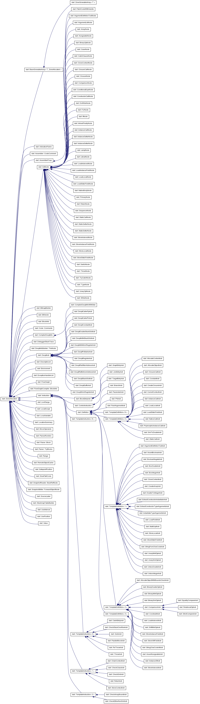

Dart VM Advent Calendar 2012 12/14¶
Dart VMのIRに関して¶
JVMやLLVMは、中間表現であるBytecodeやBitcodeを入力としていますが、Dart VMの場合、入力はDartのソースコードです。
JITコンパイル時にIRは存在しますが、BytecodeやBitcodeのような用途を目指して、IRは定義されていません。
JITコンパイルする際に、DartのソースコードをASTに変換し、IRに変換し、最終的に実行用のコードを生成します。
その後、JITコンパイルされたコードを実行します。 実行時に生成するオブジェクトが、ObjectとRawObjectになります。
- AST 抽象構文木 (Abstract Syntax Tree)
- IR 中間表現 (Intermediate Representation)
- Object 実行時のオブジェクト、操作や内部状態を定義し、RawObjectを参照する。
- RawObject 実行時のオブジェクト、生データと生データ管理フラグを定義する。
JITコンパイルは、Dartのソースコードを入力としますが、中間成果物であるIRは、実行用のコードを生成した後、 不要になるため捨てます。
ASTは、関数に紐づいてキャッシュされていたかも。
Dart VMのIR¶
以下に示すのが、全IRだったきがします。
IRのダンプがみたい場合は、–print-flow-graphを指定すればOKです。
Dart VMのIRは、FlowGraphの各Nodeを構成します。
runtime/vm/intermediate_language.h
// Instructions.
// M is a single argument macro. It is applied to each concrete instruction
// type name. The concrete instruction classes are the name with Instr
// concatenated.
#define FOR_EACH_INSTRUCTION(M) \
M(GraphEntry) \
M(JoinEntry) \
M(TargetEntry) \
M(Phi) \
M(Parameter) \
M(ParallelMove) \
M(PushArgument) \
M(Return) \
M(Throw) \
M(ReThrow) \
M(Goto) \
M(Branch) \
M(AssertAssignable) \
M(AssertBoolean) \
M(ArgumentDefinitionTest) \
M(CurrentContext) \
M(StoreContext) \
M(ClosureCall) \
M(InstanceCall) \
M(PolymorphicInstanceCall) \
M(StaticCall) \
M(LoadLocal) \
M(StoreLocal) \
M(StrictCompare) \
M(EqualityCompare) \
M(RelationalOp) \
M(NativeCall) \
M(LoadIndexed) \
M(StoreIndexed) \
M(StoreInstanceField) \
M(LoadStaticField) \
M(StoreStaticField) \
M(BooleanNegate) \
M(InstanceOf) \
M(CreateArray) \
M(CreateClosure) \
M(AllocateObject) \
M(AllocateObjectWithBoundsCheck) \
M(LoadField) \
M(StoreVMField) \
M(InstantiateTypeArguments) \
M(ExtractConstructorTypeArguments) \
M(ExtractConstructorInstantiator) \
M(AllocateContext) \
M(ChainContext) \
M(CloneContext) \
M(CatchEntry) \
M(BinarySmiOp) \
M(UnarySmiOp) \
M(CheckStackOverflow) \
M(SmiToDouble) \
M(DoubleToInteger) \
M(CheckClass) \
M(CheckSmi) \
M(Constant) \
M(CheckEitherNonSmi) \
M(BinaryDoubleOp) \
M(MathSqrt) \
M(UnboxDouble) \
M(BoxDouble) \
M(UnboxInteger) \
M(BoxInteger) \
M(BinaryMintOp) \
M(ShiftMintOp) \
M(UnaryMintOp) \
M(CheckArrayBound) \
M(Constraint) \
M(StringCharCodeAt) \
M(StringFromCharCode)
最適化の過程では、各Nodeをさらに高速なNodeに置き換えていきます。
たくさんあるIRですが、種類に応じて分けることができます。
例えば、非最適化時のIR、最適化時のIR、組み込み関数用のIRなどです。
- control コントロールフローを制御するIR
- common 非最適化、最適化に共通
- optimize 最適化されたIR
- deoptimize 脱最適化用IR
- intrinsic 組み込みIR
- checked checked mode用IR
試しにちょっと分けてみますか。よくわからないものはcommonにしています。
| IR | type |
|---|---|
| GraphEntry | control |
| JoinEntry | control |
| TargetEntry | control |
| Phi | optimize |
| Parameter | common |
| ParallelMove | optimize |
| PushArgument | common |
| Return | common |
| Throw | control |
| ReThrow | control |
| Goto | control |
| Branch | control |
| AssertAssignable | checked |
| AssertBoolean | checked |
| ArgumentDefinitionTest | checked |
| CurrentContext | commont |
| StoreContext | common |
| ClosureCall | common |
| InstanceCall | common |
| PolymorphicInstanceCall | optimie |
| StaticCall | common |
| LoadLocal | common |
| StoreLocal | common |
| StrictCompare | common |
| EqualityCompare | common |
| RelationalOp | common |
| NativeCall | common |
| LoadIndexed | optimize |
| StoreIndexed | optimize |
| StoreInstanceField | common |
| LoadStaticField | common |
| StoreStaticField | common |
| BooleanNegate | optimize |
| InstanceOf | common |
| CreateArray | common |
| CreateClosure | common |
| AllocateObject | common |
| AllocateObjectWithBoundsCheck | common |
| LoadField | optimize |
| StoreVMField | optimize |
| InstantiateTypeArguments | common |
| ExtractConstructorTypeArguments | common |
| ExtractConstructorInstantiator | common |
| AllocateContext | common |
| ChainContext | common |
| CloneContext | common |
| CatchEntry | control |
| BinarySmiOp | optimize |
| UnarySmiOp | optimize |
| CheckStackOverflow | common |
| SmiToDouble | optimize |
| DoubleToInteger | intrinsic |
| CheckClass | deoptimize |
| CheckSmi | deoptimize |
| Constant | common |
| CheckEitherNonSmi | deoptimize |
| BinaryDoubleOp | optimize |
| MathSqrt | intrinsic |
| UnboxDouble | optimize |
| BoxDouble | optimize |
| UnboxInteger | optimize |
| BoxInteger | optimize |
| BinaryMintOp | optimize |
| ShiftMintOp | optimize |
| UnaryMintOp | optimize |
| CheckArrayBound | deoptimize |
| Constraint | optmize |
| StringCharCodeAt | intrinsic |
| StringFromCharCode | intrinsic |
IRの継承関係¶
膨大な継承図ですね。。
特徴は、すべてZoneAllocatedクラスを継承していることです。
ZoneAllocatedクラスは、一時的な領域確保用のオブジェクトで、特定のscope(zone)中に生存するオブジェクトです。
特定のzoneの間のみ、例えばコンパイル中のみ生存するIRは、ZoneAllocatedを継承するものが多いです。
特定のzoneを抜けた場合は、ZoneHandleがRAIIに則って、Handleに関連づいた全ZoneAllocatedクラスを一斉開放します。
ZoneAllocatedクラスを継承するクラスは、ASTNodeの子クラスと、Instructionの子クラスが多いですね。
ASTNodeは、dartのソースコードをParseして、ASTの各Nodeになります。
さらに、JITコンパイルが進むと、ASTからIRに変換し、最適化を行った後、 Emitしてアセンブラコードを生成します。
IRはコンパイルが終わったら、一斉に破棄されるはずです。
ASTは何度もコンパイルされる可能性があるため、関数に紐づいてキャッシュされたような気がします。
IRの構成¶
| src | overview |
|---|---|
| runtime/vm/intermediate_language.h | 中間表現の定義 |
| runtime/vm/intermediate_language.cc | 中間表現の機種非依存の処理の実装 |
| runtime/vm/intermediate_language_ia32.cc | 機種依存の命令、アセンブラのEmitと、レジスタ割付のルール |
IRには、機種依存を定義する部分があります。
組み込み命令のIRである、DoubleToIntegerInstrを例に説明します。
DoubleToIntegerInstrの機種依存定義部
// レジスタ割付ルール
LocationSummary* DoubleToIntegerInstr::MakeLocationSummary() const {
const intptr_t kNumInputs = 1; // IRをEmitする際のinputとなるレジスタが1つ必要。
const intptr_t kNumTemps = 0; // IRをEmitする間に必要な、tempレジスタ。
LocationSummary* result =
new LocationSummary(kNumInputs, kNumTemps, LocationSummary::kCall);
result->set_in(0, Location::RegisterLocation(ECX)); // inレジスタとして、ECXを予約。
result->set_out(Location::RegisterLocation(EAX)); // IRをEmit後に生存しているレジスタ。
return result; // outレジスタとして、EAXを予約。返値格納用。
}
// アセンブラのEmitter
void DoubleToIntegerInstr::EmitNativeCode(FlowGraphCompiler* compiler) {
Register result = locs()->out().reg(); // outレジスタEAXの別名result
Register value_obj = locs()->in(0).reg(); // inレジスタECXの別名value_obj
XmmRegister value_double = XMM0; // XMM0レジスタもこっそり使用。
ASSERT(result == EAX);
ASSERT(result != value_obj); // Unboxingしてdouble値を取得。
__ movsd(value_double, FieldAddress(value_obj, Double::value_offset())); //BoxingされたDouble型のvalue_objから、double値を取得する。
__ cvttsd2si(result, value_double); // doubleからint32へ変換。XMM0からEAXへ。
// Overflow is signalled with minint.
Label do_call, done;
// Check for overflow and that it fits into Smi.
__ cmpl(result, Immediate(0xC0000000)); // Smi型に変換した際にoverflowしないかチェック
__ j(NEGATIVE, &do_call, Assembler::kNearJump); // overflowする場合、do_call(slowpath)へjump
__ SmiTag(result); // EAXをSmiTag付けする。 EAX << 1
__ jmp(&done); // 終了。
__ Bind(&do_call); // slowpathを定義する。
__ pushl(value_obj); // push ECX
ASSERT(instance_call()->HasICData());
const ICData& ic_data = *instance_call()->ic_data();// DoubleToIntegerInstrのICを取得。
ASSERT((ic_data.NumberOfChecks() == 1));
const Function& target = Function::ZoneHandle(ic_data.GetTargetAt(0));
const intptr_t kNumberOfArguments = 1;
compiler->GenerateStaticCall(instance_call()->deopt_id(), // StaticCallでDoubleToIntegerのICを呼び出す
instance_call()->token_pos(),
target,
kNumberOfArguments,
Array::Handle(), // No argument names.,
locs());
__ Bind(&done); // 終了 return EAX
}
上記のDoubleToIntegerInstrの処理をざっくり説明すると、
- Double型のオブジェクトをUnboxingする。
- double値からint32値へ変換する。
- int32値がSmi型に収まる場合、Smi型に変換する。
- Smi型に収まらない場合、どんな型でも動作するDoubleToIntegerのInlineCacheを呼び出す。
Emitterは、JITコンパイル時に生成するアセンブラを定義する部分です。
Emitterは、JITコンパイル時にFlowGraphCompilerによって、Emitterが叩かます。
IRからアセンブラに変換する際に必要になります。
まとめ¶
- IRはJITコンパイルが終われば捨てる。
- IRには、機種非依存の定義と機種依存の定義が存在する。
- IRの機種非依存部は、レジスタ割付ルールとEmitterを定義する。